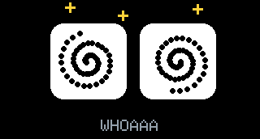
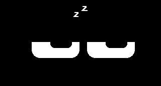
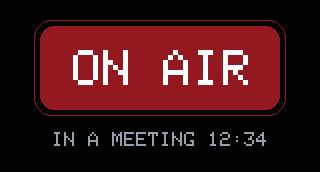
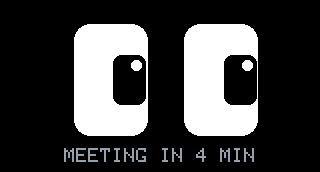
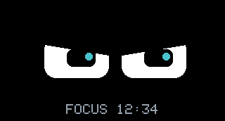
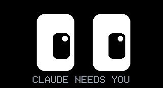
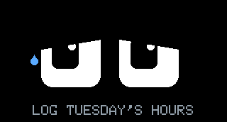
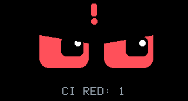
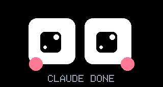
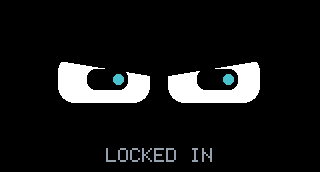

The face follows the day
The first page is a pair of eyes. The Buddy picks its face from what is going on, and writes the reason under the eyes. When several things are true, the one higher in this list wins.

1A shake
Shake the Buddy and it goes dizzy. When you stop it gives you a look, then shows the Today page.

2Night
In the night hours you set (night mode is off until you switch it on) the eyes go heavy and the screen dims. A tap brings normal brightness back for 30 seconds.

3On air
A program on the laptop uses the microphone. The time is how long it has been on.

4A meeting soon
From 5 minutes before a meeting in your Odoo or Google calendar. The caption takes turns with the meeting's name.

5Timer
Lay the Buddy flat for 2 seconds and a timer counts up. Stand it up and it shows how long you focused. While it runs, the laptop's notifications are off and its screen stays awake.

6Computer locked
Between 12:00 and 14:00 it is on LUNCH BREAK, chewing. At any other time it shows AWAY and dozes. While the computer is locked it stays on the face and stops flipping pages.

7Claude needs you
A Claude Code session is waiting for an approval or has asked a question. The caption takes turns with the project's name until it is answered.

8Log your hours
On a weekday, while the working day before has fewer than 4 hours on your Odoo timesheet. The caption names that day.

9CI red
An open pull request updated in the last 4 days has failed checks. The number is how many.

10Claude done
A Claude Code session just finished. Shown for 90 seconds.

11Locked in
At least one of your Odoo tasks is in a Development stage.